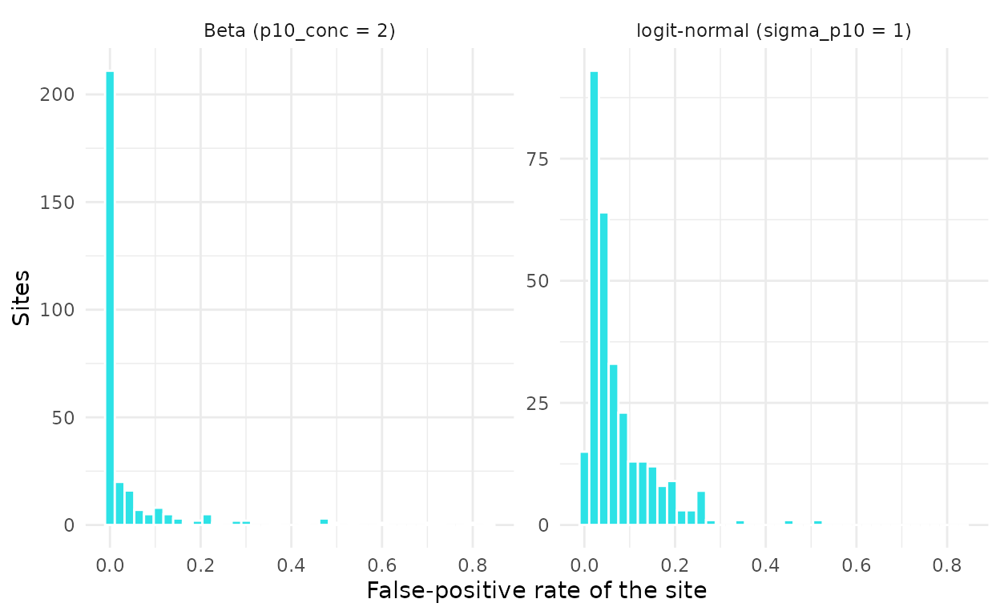
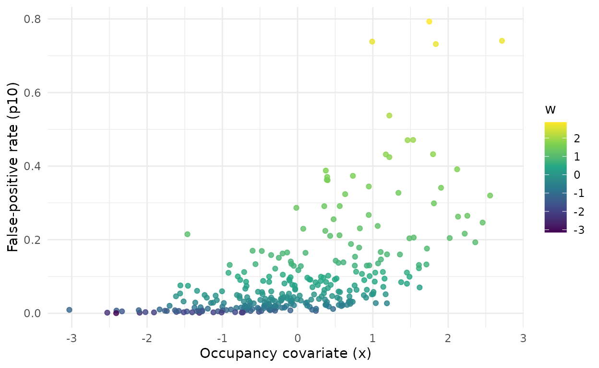
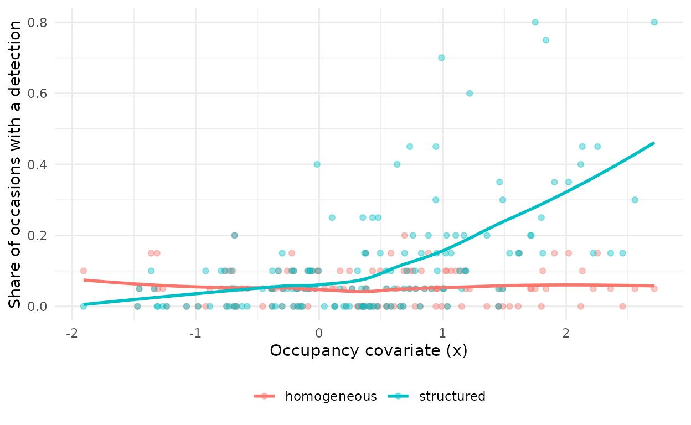

simulate_fp() generates data from known parameters under
the multiple-methods design of Miller et al. (2011): an automated method
that returns true detections and false positives at every site, and a
verified method, free of false positives, at a random subset of sites.
Simulated data serve three purposes: to learn what a model can and
cannot recover, to check whether a model is calibrated for a planned
design (vignette("calibration", package = "crywolf")), and
to test code before it meets real data.
This article describes the three false-positive regimes that
simulate_fp() can generate and the options for the
observation process. With the same seed, simulate_fp()
returns the same datasets as the simulator of the fpcalib research
compendium (Provete et al., 2026), so the simulation study behind the
package can be reproduced with it.
What a simulation returns
sim <- simulate_fp(nsite = 300, nocc = 20, psi = 0.5, b1 = -0.8,
p11 = 0.6, p10 = 0.05, frac_verified = 0.3, seed = 1)
sim$data
#> <fp_data>
#> sites: 300
#> automated occasions: 6000 (naive occupancy 0.83)
#> verified sites: 96 (288 occasions, 44 with a confirmed detection)
#> recorders: 5
#> site covariates: x, w
#> observation covariates: bio, aci
names(sim$truth)
#> [1] "regime" "psi" "b0"
#> [4] "b1" "p11" "p10"
#> [7] "r11" "p10_marginal" "sigma_p10"
#> [10] "p10_conc" "conf_effect" "conf_cor"
#> [13] "conf_cor_realized" "a_bio" "a_aci"
#> [16] "sd_recorder" "frac_confirmed" "n_verified_sites"
#> [19] "z" "p10_site"sim$data is an fp_data object ready for
fp_occu(). Its sites table holds the
standardized occupancy covariate x and the gradient
w (all zero unless false positives are structured, see
below), and its auto table holds two observation covariates
(bio, aci) and a recorder identifier.
sim$truth holds the generating values, the latent occupancy
states z, the false-positive rate of each site
(p10_site), and its mean over sites
(p10_marginal), which is the target of the estimated
p10_bar.
Because x is standardized after it is drawn,
b1 is the true slope exactly, and psi is the
occupancy probability at the mean of x.
Three false-positive regimes
Homogeneous
By default every site has the same false-positive rate,
p10. This is the assumption of the constant-rate model,
fp_occu(fp = ~ 1).
range(sim$truth$p10_site)
#> [1] 0.05 0.05Unstructured
The rate can vary among sites at random, independently of everything
else. sigma_p10 gives logit-normal variation around
p10, and p10_conc draws each site’s rate from
a Beta distribution with mean p10. With a small
concentration and a small mean, most sites get a rate near zero and a
few get high ones, so that a few sites produce most of the false
positives.
sim_ln <- simulate_fp(nsite = 300, nocc = 20, sigma_p10 = 1, seed = 1)
sim_beta <- simulate_fp(nsite = 300, nocc = 20, p10_conc = 2, seed = 1)
p10_df <- rbind(
data.frame(regime = "logit-normal (sigma_p10 = 1)", p10 = sim_ln$truth$p10_site),
data.frame(regime = "Beta (p10_conc = 2)", p10 = sim_beta$truth$p10_site)
)
ggplot(p10_df, aes(p10)) +
geom_histogram(bins = 40, fill = "#2DE2E6", colour = "white") +
facet_wrap(~ regime, scales = "free_y") +
labs(x = "False-positive rate of the site", y = "Sites") +
theme_minimal()
Distribution of the site-level false-positive rate under the two unstructured regimes, both with a base rate of 0.05.
Unstructured variation makes a single rate a poor description of the sites, but it is not related to the occupancy covariate. In the simulation study it damaged the estimate of the false-positive rate much more than the occupancy slope, whose intervals still covered the truth in 81% of the Beta-regime datasets (Provete et al., in preparation).
Structured
In the structured regime the false-positive rate tracks a gradient
w that is correlated with the occupancy covariate. This is
what happens when a soundalike species becomes more common where the
target becomes rarer, or when background noise that the classifier
confuses with the target changes along the same environmental gradient.
The rate of site i is
\text{logit}(p_{10,i}) = \text{logit}(p_{10}) + \gamma_w w_i, \qquad w_i = \rho x_i + \sqrt{1 - \rho^2}\, \epsilon_i, \quad \epsilon_i \sim \text{Normal}(0, 1),
where \gamma_w is
conf_effect and \rho is
conf_cor, so w has unit variance and
correlation \rho with
x.
sim_w <- simulate_fp(nsite = 300, nocc = 20, p10 = 0.05,
conf_effect = 1.5, conf_cor = 0.7, seed = 1)
sim_w$truth$conf_cor_realized
#> [1] 0.6903446
sim_w$truth$p10_marginal
#> [1] 0.0957284
sites_w <- sim_w$data$sites
sites_w$p10 <- sim_w$truth$p10_site
ggplot(sites_w, aes(x, p10, colour = w)) +
geom_point(alpha = 0.8) +
scale_colour_viridis_c() +
labs(x = "Occupancy covariate (x)", y = "False-positive rate (p10)",
colour = "w") +
theme_minimal()
Site-level false-positive rate against the occupancy covariate in the structured regime (effect 1.5, correlation 0.7), coloured by the confusing gradient w.
Structured confusion is the case that matters most for inference.
With a true slope of −0.8, occupancy falls along x, while
false positives rise along it. A model with a constant rate attributes
part of the false detections at high x to presence and
flattens the slope. In the simulation study, verifying more sites did
not remove this bias, while letting the false-positive rate depend on
x reduced it (Provete et al., in preparation).
The pattern shows in the raw data. At unoccupied sites every
automated detection is false, and their share rises with
x:
naive_fp <- function(s, label) {
a <- s$data$auto
det <- tapply(a$y, a$site, mean)
data.frame(regime = label, x = s$data$sites$x, share = as.numeric(det),
z = s$truth$z)[s$truth$z == 0, ]
}
nd <- rbind(naive_fp(sim, "homogeneous"), naive_fp(sim_w, "structured"))
ggplot(nd, aes(x, share, colour = regime)) +
geom_point(alpha = 0.4) +
geom_smooth(method = "loess", formula = y ~ x, se = FALSE) +
labs(x = "Occupancy covariate (x)",
y = "Share of occasions with a detection", colour = NULL) +
theme_minimal() +
theme(legend.position = "bottom")
Share of automated occasions with a detection at each unoccupied site, against the occupancy covariate, with and without structured confusion. Lines are loess smooths.
The observation process
Further arguments shape detection and verification:
-
p11andr11are the detection probabilities of the automated and the verified method;frac_verifiedis the probability that a site is verified andnverthe number of verified occasions per verified site. -
a_bioanda_acigive effects of the two observation covariates on true detection, to be fitted withdet = ~ bio + aci. -
sd_recorderadds a recorder random intercept to true detection, amongnrecrecorders, to be fitted withrandom_recorder = TRUE. With the defaultsd_recorder = 0, fit the model withrandom_recorder = FALSE: a variance whose true value is zero is hard to sample and causes divergent transitions. -
frac_confirmedswitches to the observation-confirmation design of Chambert et al. (2015): a share of the automated occasions is checked, and each checked occasion records whether it held a true observation, a false one, or both (seevignette("crywolf", package = "crywolf")).
sim_obs <- simulate_fp(nsite = 200, nocc = 10, a_bio = 0.5, a_aci = -0.3,
sd_recorder = 0.5, nrec = 6, frac_confirmed = 0.2,
frac_verified = 0, seed = 1)
sim_obs$data
#> <fp_data>
#> sites: 200
#> automated occasions: 2000 (naive occupancy 0.69)
#> verified sites: 0 (0 occasions, 68 with a confirmed detection)
#> confirmed occasions: 408 (97 with a true observation)
#> recorders: 6
#> site covariates: x, w
#> observation covariates: bio, aciFrom one dataset to a calibration check
A single simulated dataset shows what a fit looks like; many of them
show how often its intervals contain the truth.
fp_calibrate() and fp_verification_curve()
pass their design columns to simulate_fp(), fit each model
to every dataset, and summarize coverage and bias, as described in
vignette("calibration", package = "crywolf").
References
Chambert, T., Miller, D. A. W., & Nichols, J. D. (2015). Modeling false positive detections in species occurrence data under different study designs. Ecology, 96, 332–339. https://doi.org/10.1890/14-1507.1
Miller, D. A., Nichols, J. D., McClintock, B. T., Grant, E. H. C., Bailey, L. L., & Weir, L. A. (2011). Improving occupancy estimation when two types of observational error occur: non-detection and species misidentification. Ecology, 92, 1422–1428. https://doi.org/10.1890/10-1396.1
Provete, D. B., Rhinehart, T., Piatti, L., & Sugai, L. S. M. (2026). Verifying more is not enough when false positives track the environmental gradient in occupancy models (fpcalib research compendium, v0.1.0). Zenodo. https://doi.org/10.5281/zenodo.23379100